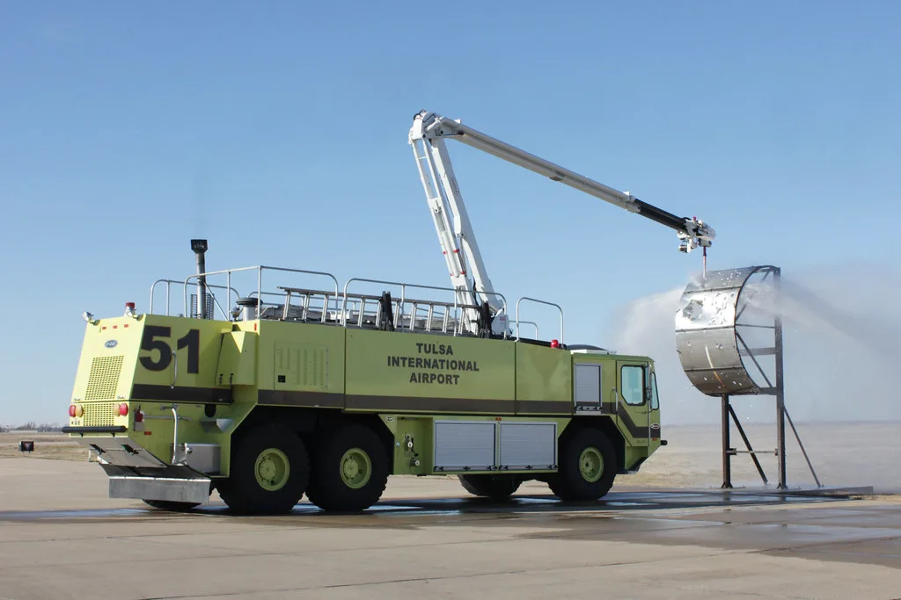

양평 무한리필 식당 천장 붕괴…14명 부상
지난 30일 저녁 경기 양평군 양평읍의 한 무한리필 음식점에서 천장이 갑자기 무너져 내려 손님과 종업원 등 14명이 다쳤다. 사고는 오후 6시36분쯤 발생했으며, 저녁 식사 시간대 매장에 있던 손님들이 그대로 잔해를 맞는 아찔한 상황이 벌어졌다. 다행히 중상자는 없는 것으로 파악됐지만, 갑작스러운 붕괴에 매장 안은 순식간에 아수라장이 됐던 것으로 전해진다. 저녁 식사를 하러 왔던 손님들은 굉음과 함께 먼지가 자욱하게 퍼지는 상황에서 서로를 부축해 대피했다고 전했다.
사고가 난 식당은 지상 1층 규모의 경량 철골 구조 건물로, 연면적은 약 2300제곱미터에 달하는 대형 매장이다. 사고 당시 매장에는 약 60명의 손님이 있었으며, 천장의 철골 구조물과 상판 패널이 통째로 바닥으로 떨어지면서 인근에 있던 손님과 직원 14명이 부상을 입고 병원으로 옮겨졌다. 부상자는 남성 2명, 여성 12명으로 파악됐다. 이들은 대부분 찰과상과 타박상 등 비교적 가벼운 부상을 입은 것으로 알려졌으며, 인근 병원으로 옮겨져 치료를 받았다.

신고를 받은 소방당국은 장비 21대와 인력 64명을 투입해 부상자 이송과 현장 통제에 나섰다. 현장에는 임시 응급의료소가 설치됐고, 추가 붕괴 우려에 대비한 안전조치도 함께 이뤄졌다. 매장에 있던 손님 대부분은 붕괴 직후 신속하게 대피한 것으로 알려졌으며, 다행히 대형 인명피해로 이어지지는 않았다.
경찰과 소방당국은 정확한 붕괴 원인을 파악하기 위한 조사에 착수했다. 경량 철골 구조 건물에서 넓은 면적의 천장이 한꺼번에 무너져 내린 만큼, 시공 부실이나 노후화, 하중 관리 문제 등 여러 가능성을 열어두고 조사가 진행될 것으로 보인다. 사고 이전부터 천장 처짐 등 붕괴 조짐이 있었다는 목격담도 제기되고 있어, 당국은 관련 증언과 시설물 안전점검 이력을 함께 확인할 방침인 것으로 전해진다. 당국은 건물 구조 안전진단 결과가 나오는 대로 정확한 붕괴 경위를 발표할 예정이다.

이번 사고는 다중이용시설의 구조 안전 문제를 다시 한번 환기시키고 있다. 넓은 무기둥 공간을 확보하기 위해 경량 철골 구조를 사용하는 대형 식당이나 매장이 늘어난 상황에서, 정기적인 시설물 점검과 하중 관리가 제대로 이뤄지고 있는지에 대한 우려가 커지고 있다. 특히 사고 당시 매장이 만석에 가까운 상태였다는 점에서, 붕괴 시점이 조금만 달랐어도 훨씬 큰 인명피해로 이어질 수 있었다는 지적도 나온다. 무한리필 매장처럼 회전율이 높고 손님이 밀집하는 업종일수록, 눈에 잘 띄지 않는 구조물 이상 징후를 조기에 발견할 수 있는 점검 체계가 필요하다는 목소리가 뒤따르고 있다.
관할 지방자치단체는 사고 건물에 대한 사용 중단 조치와 함께 인근 유사 구조 건물에 대한 안전점검 확대 여부를 검토하고 있는 것으로 알려졌다. 부상자들의 치료와 보상 문제도 뒤따를 전망인 가운데, 당국의 정확한 원인 조사 결과에 따라 시공사와 건물 관리 주체에 대한 책임 소재도 가려질 것으로 보인다. 최근 무더위 속에 손님이 몰리는 여름 성수기인 만큼, 대형 식당들의 시설물 안전관리에 대한 경각심을 높여야 한다는 목소리도 함께 나오고 있다.